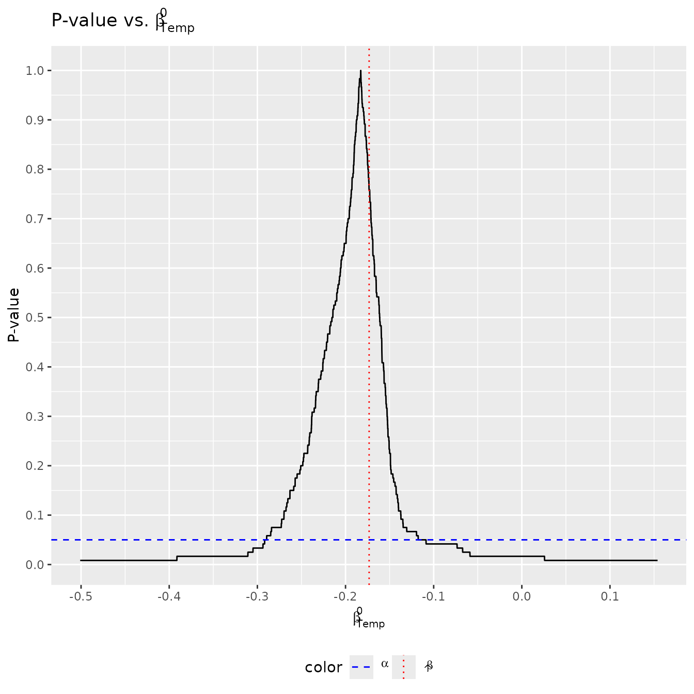
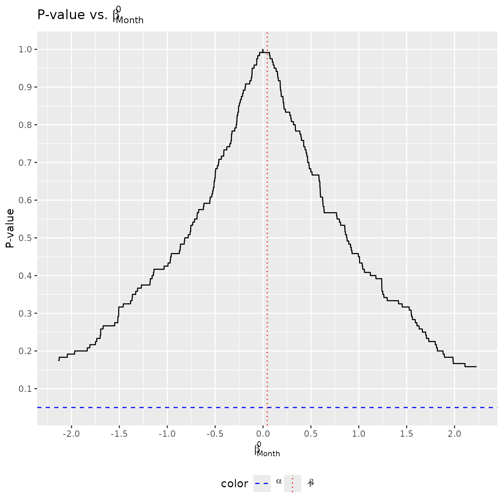

The exactt package tests whether a slope coefficient is
equal to some null value using the novel method described in Pouliot
(2023). Importantly, inverting such a test produces a marginally valid
confidence interval.
The exactt package is hosted on GitHub at https://github.com/ian-xu-economics/exactt/. It can be
installed using the remotes::install_github() function:
# install.packages("remotes")
remotes::install_github("ian-xu-economics/exactt")To cite the exactt package in publications, use the
citation() function, which provides both the text version
and the BibTeX entry for referencing:
citation("exactt")exactt
After installing exactt, we can attach the package to
our session using the base library() function:
To compute the
confidence interval, use the exactt() function. Here’s an
example using daily air quality measurements in New York found in
datasets::airquality. We’ll investigate the relationship
between temperature (degrees F) and month (1–12) on wind (mph).
summary(datasets::airquality[c("Wind", "Temp", "Month")])
#> Wind Temp Month
#> Min. : 1.700 Min. :56.00 Min. :5.000
#> 1st Qu.: 7.400 1st Qu.:72.00 1st Qu.:6.000
#> Median : 9.700 Median :79.00 Median :7.000
#> Mean : 9.958 Mean :77.88 Mean :6.993
#> 3rd Qu.:11.500 3rd Qu.:85.00 3rd Qu.:8.000
#> Max. :20.700 Max. :97.00 Max. :9.000Suppose our model is
We can create a
confidence interval by plugging in standard formula notation into
exactt(). If we don’t specify any additional parameters,
then by default:
nBlocks = 5).variables = NULL).nPerms = factorial(nBlocks)).alpha = 0.05).studentize = TRUE).permutation = NULL).optimize = FALSE).
exactt1 <- exactt(Wind ~ Temp + Month,
data = datasets::airquality)
exactt1
#>
#> Call:
#> exactt(model = Wind ~ Temp + Month, data = datasets::airquality)
#>
#>
#> Summary:
#> Estimate Pr(>|t|) 2.5% W 97.5% W 2.5% 97.5%
#> Temp -0.17320 0.008333 -0.2936 -0.1087 -0.2936 -0.1087
#> Month 0.04382 0.991700 -3.8580 2.9420 -3.8580 2.9420If tidyverse and latex2exp are
installed, you can visualize the results by plotting the p-value against
using the exacttPlot() function:
exacttPlot(exactt1)
#> [[1]]
#>
#> [[2]]
To focus on specific coefficients, set the variables
parameter. The number entered corresponds to the index of the regressors
in the model (note that the intercept is never counted). For example.
set variables = 1 for Temp, and set
variables = 2 for Month.
exactt2 <- exactt(Wind ~ Temp + Month,
data = datasets::airquality,
variables = 1)
exactt2
#>
#> Call:
#> exactt(model = Wind ~ Temp + Month, data = datasets::airquality,
#> variables = 1)
#>
#>
#> Summary:
#> Estimate Pr(>|t|) 2.5% W 97.5% W 2.5% 97.5%
#> Temp -0.1732 0.008333 -0.2936 -0.1087 -0.2936 -0.1087This creates a 95% confidence interval for Temp only. It
is equivalent to the case where variables = NULL (all
variables are of interest) because these confidence intervals are
marginally valid.
The exactt() function is designed to allow easy
modification of your model to fit various analytical needs. For
instance, you can treat a variable as categorical, include polynomial
terms, or apply other transformations directly within the model formula.
This flexibility helps tailor the analysis to specific research
questions without needing pre-transformed data. To illustrate, consider
treating Month as a categorical variable to explore its
discrete impact on wind speed in a dataset of daily air quality
measurements:
exactt4 <- exactt(Wind ~ Temp + as.factor(Month),
data = datasets::airquality)
exactt4
#>
#> Call:
#> exactt(model = Wind ~ Temp + as.factor(Month), data = datasets::airquality)
#>
#>
#> Summary:
#> Estimate Pr(>|t|) 2.5% W 97.5% W 2.5% 97.5%
#> Temp -0.1953 0.008333 -0.2939 -0.1094 -0.2939 -0.1094
#> as.factor(Month)6 1.2900 0.975000 -Inf Inf -Inf Inf
#> as.factor(Month)7 0.9035 0.283300 -Inf Inf -Inf Inf
#> as.factor(Month)8 0.7677 0.391700 -Inf 10.5800 -Inf 10.5800
#> as.factor(Month)9 0.7740 0.608300 -Inf Inf -Inf InfThe confidence intervals for each category of Month is not informative due to suboptimal data ordering, which can diminish the statistical power of the test. This issue can be addressed by optimizing the data ordering.
The confidence intervals produced by the exactt()
function can change with the ordering of the data. Certain data
orderings can enhance statistical power, particularly when the sample
size is small and the number of blocks is large. The impact of
optimization is even more pronounced when dealing with categorical
variables, where appropriate ordering can substantially increase the
test’s power.
The exactt() function utilizes a genetic algorithm
(provided by the GA::ga() function) to optimize data
ordering. This approach systematically explores various data
arrangements to find the one that maximizes statistical power on
average.
To activate the optimization feature, set
optimize = TRUE. Additionally, exactt() allows
for the specification of various parameters of the GA::ga()
function to tailor the optimization process. For instance, you can limit
the number of iterations with maxiter or specify the seed
with seed for reproducibility:
exactt5 <- exactt(Wind ~ Temp + as.factor(Month),
data = datasets::airquality,
optimize = TRUE,
parallel = TRUE,
maxiter = 5,
seed = 2024)
exactt5
#>
#> Call:
#> exactt(model = Wind ~ Temp + as.factor(Month), data = datasets::airquality,
#> optimize = TRUE, parallel = TRUE, maxiter = 5, seed = 2024)
#>
#>
#> Summary:
#> Estimate Pr(>|t|) 2.5% W 97.5% W 2.5% 97.5%
#> Temp -0.1953 0.008333 -0.2673 -0.1127 -0.2673 -0.1127
#> as.factor(Month)6 1.2900 0.375000 -1.2300 2.7040 -1.2300 2.7040
#> as.factor(Month)7 0.9035 0.533300 -1.4200 2.4800 -1.4200 2.4800
#> as.factor(Month)8 0.7677 0.850000 -3.6100 2.1600 -3.6100 2.1600
#> as.factor(Month)9 0.7740 0.408300 -2.3220 3.9110 -2.3220 3.9110Note that by optimizing the data ordering, exactt() is
now able to construct informative
confidence intervals for each category of Month.
Furthermore, the detailed results of the optimization process, including
the genetic algorithm’s configurations and outcomes for each variable,
are stored in the exactt5$gaResults. For instance, to
review a summary of the genetic algorithm’s performance for the
Temp variable, use:
exactt5$gaResults$Temp@summary
#> max mean q3 median q1 min
#> [1,] 3373.156 2466.905 2756.414 2491.108 2149.217 1628.742
#> [2,] 3379.420 2557.049 2804.535 2564.529 2331.299 1548.839
#> [3,] 3379.420 2550.141 2816.223 2561.671 2278.764 1730.608
#> [4,] 3379.420 2555.116 2761.960 2605.983 2245.362 1538.921
#> [5,] 3379.420 2574.320 2779.467 2574.736 2277.046 1701.787The exactt() function is capable of handling models with
instrumental variables (IV). In Example 15.5 of Wooldridge (2020),
Wooldridge reanalyzes Mroz (1987). This example explores the impact of
education (educ) on log(wage), using parental
education levels—mother’s education (motheduc) and father’s
education (fatheduc)—as instruments. The model controls for
experience (exper) and its square (expersq),
with education being the primary variable of interest, hence we set
variables = 1. Optionally, as before, we can optimize the data ordering
to enhance statistical power.
exactt_iv <- exactt(lwage ~ educ + exper + expersq | exper + expersq + motheduc + fatheduc,
data = wooldridge::mroz,
variables = 1,
optimize = TRUE,
parallel = TRUE,
maxiter = 10,
monitor = FALSE,
seed = 2024)
exactt_iv
#> Call:
#> exactt(model = lwage ~ educ + exper + expersq | exper + expersq +
#> motheduc + fatheduc, data = wooldridge::mroz, variables = 1,
#> optimize = TRUE, parallel = TRUE, maxiter = 10, monitor = FALSE,
#> seed = 2024)
#>
#>
#> Summary:
#> Estimate Pr(>|t|) 2.5% W 97.5% W 2.5% 97.5%
#> educ 0.0614 0.1417 -0.041 0.148 -0.041 0.148